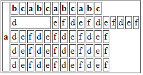
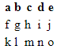
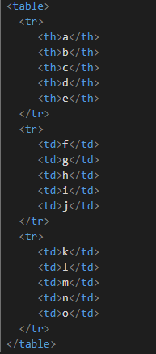
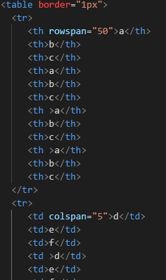

Tabulky se na webových stránkách objevují často, a někdy si toho ani nevšimneme.
U tabulek jsou hlavní čtyři věci a to <table>...</table>, <tr>...</tr>, <th>...</th> a <td>...</td>
<table>...</table> je 1. věc, aby jsme tabulku vytvořili
<tr>...</tr> nám dělá řádky
<th>...</th> je nadpis pro tabulku
<td>...</td> je pro jakýkoliv text
U tabulek se také používá stylizace, třeba pro jeho okraje nebo pro jeho buňky, důvod uveden níže.
Buňky v tabulce se jako v každé jiné tabulce dají sloučit za použití buď rowspan nebo colspan
rowspan pro řádky
colspan pro sloupce
   